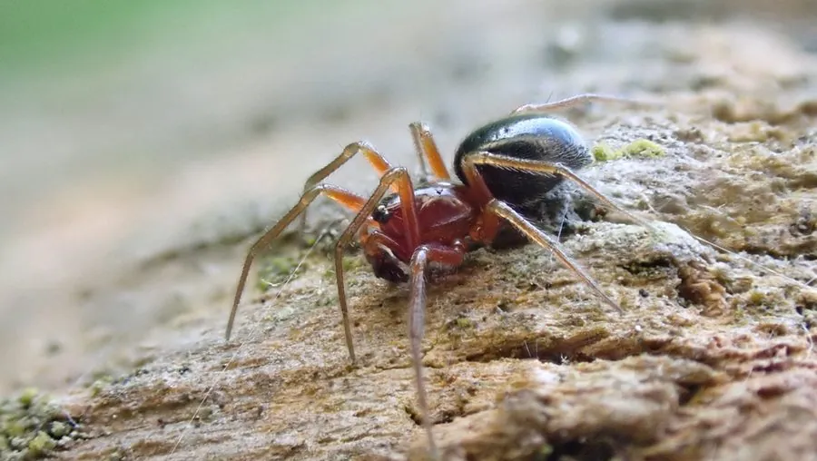

蛛形动物 · 动物界
草间钻头蛛 Hylyphantes graminicola

体长仅两三毫米的微小皿蛛，在稻田与草地结水平小网，捕食飞虱、叶蝉，是农田重要的天敌。
- 分类
- 门节肢动物门纲蛛形纲目蜘蛛目科皿蛛科属钻头蛛属
- 栖息环境
- 稻田、麦田、草地与沟渠边的草茎间
- 地理分布
- 中国南北各地及日本、朝鲜半岛
- 保护级别
- 常见农田天敌，无保护需求；广谱农药是主要威胁
物种志
草间钻头蛛的雌蛛体长约二至三毫米，雄蛛略小，是中国农田里最常见的微蛛之一。头胸部黄褐，腹部灰褐至暗褐，背面有淡色斑纹，八足细长，第四步足最长。它结的是小型水平皿网，网面离地几厘米，架在草茎之间，蛛体倒挂在网下等待猎物落网。
它分布于中国南北各地以及日本、朝鲜半岛，栖息在稻田、麦田、草地和沟渠边，尤其在水稻生长前期数量很大。它捕食飞虱、叶蝉、蚜虫和小型蛾类，一头蛛每天可捕食数头飞虱，是稻田害虫的重要自然控制因子。雌蛛把卵囊产在草茎上，一年发生多代。稻田大量施用广谱农药会使其种群骤降，进而引发飞虱再猖獗，因此保护这类微蛛是害虫综合治理的重要内容。
形态与习性
- 体长雌蛛仅二至三毫米
- 网型水平皿网，架于草茎离地数厘米
- 捕食飞虱、叶蝉、蚜虫与小蛾
- 捕食量一头蛛每天可捕数头飞虱
- 繁殖卵囊产于草茎，一年多代
- 意义稻田害虫的重要自然控制因子
趣味知识
- 它小得像一粒芝麻，却在稻田里承担着压制飞虱的重任。
- 稻飞虱大发生，有时正是因为广谱农药先把这类小蛛杀光了。
- 它把网架在草茎之间，自己倒挂在网下，等虫子撞上来。